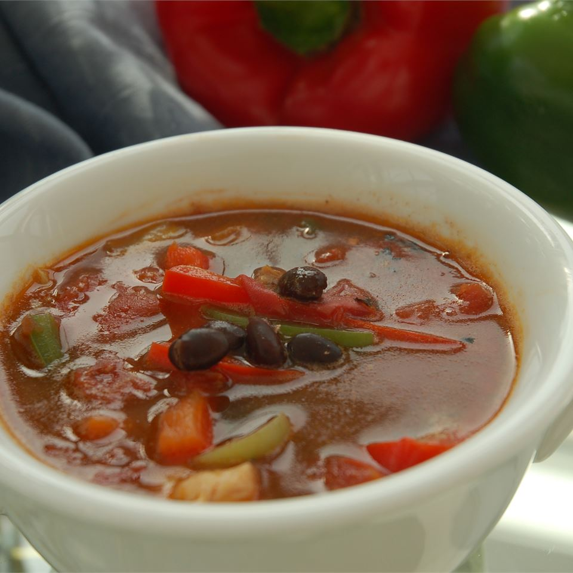

Easy Chicken Fajita Soup

Description
This soup is simply made, with chicken, peppers, onions, and tomatoes in a delicious seasoned broth. Serve the soup as is or top with tortilla chips.
By Gweb8
Ingredients
- 2 tablespoons vegetable oil
- 1 pound skinless, boneless chicken breasts, cut into strips
- 1 (1.27 ounce) packet fajita seasoning
- 1 red bell pepper, cut into thin strips
- 1 green bell pepper, cut into thin strips
- 1 poblano pepper, cut into thin strips
- 1 large onion, cut into thin strips
- 1 (14.5 ounce) can fire roasted diced tomatoes
- 1 (15 ounce) can seasoned black beans
- 1 (14 ounce) can chicken broth
- 1 dash hot sauce
- salt and pepper to taste
Steps
- Heat oil in a large soup pot over medium heat. Place chicken in the hot oil; cook, stirring only occasionally, until brown, about 10 minutes. Sprinkle fajita seasoning over the browned chicken and stir well to coat. Add the red and green bell pepper, poblano pepper, and onion to the seasoned chicken. Stir and cook over medium heat until the vegetables are soft, about 10 minutes.
- Pour the fire roasted tomatoes, black beans, and chicken broth into the pot with the chicken and vegetables. Bring the soup to a boil over high heat, then reduce the heat to medium-low, and simmer uncovered for 30 minutes, stirring occasionally.
- Season the soup with hot sauce, salt, and pepper to taste before serving.
Back to Main Page